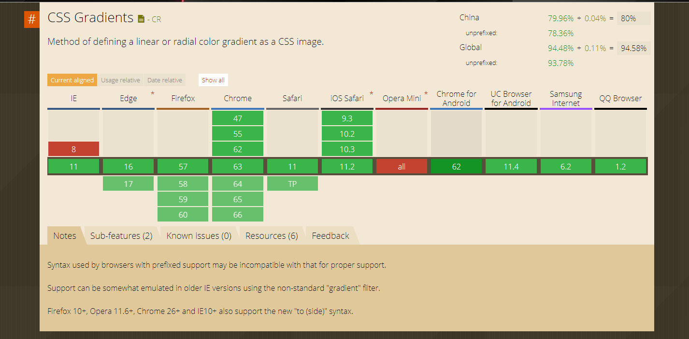

这里我们先了解一下这个属性的浏览器支持性：
这张图发表日期为2018年元月，基本上主流浏览器都支持了：本例测试的浏览器都有，IE10+，Chrome 59.0 Firefox 57.0。 接下来了解下内核，现在主流浏览器的内核，主要有 这四种Mozilla（Firefox，Flock），WebKit（Safari、Chrome），Opera（Opera浏览器）、Trident（IE浏览器）。
使用的语法是：background:linear-gradient(direction,color-stop1,color-stop2,color-stop3,.....)
如果没有写direction，只写了color-stop那么默认是从上往下的direction，属性direction的值可以设置为：上下左右中，也可以设置角度，后面会说到。
demo1{ height:100px; width:200px; background:-webkit-linear-gradient(#fff,#000); background:-o-linear-gradient(#fff,#000); background:-moz-linear-gradient(#fff,#000); background:linear-gradient(#fff,#000); }
demo1,没有设置方向，显示默认设置，由上而下
demo2,从左到右
demo4,对角
demo6,角度上的设置
demo7,使用多种颜色设置渐变
demo8,还可以设置透明度，就是将颜色的设置为rgba()的就可以
demo9,设置重复的渐变
demo的所有代码在这里github - demo